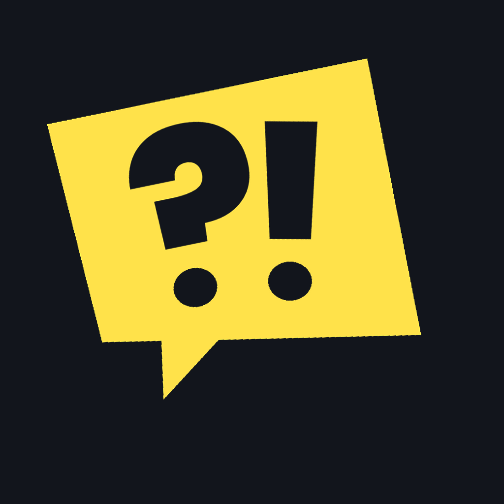
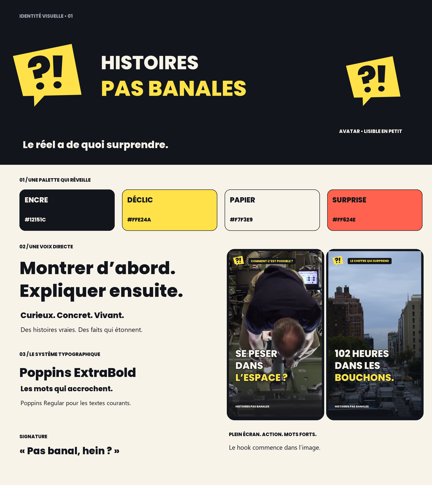
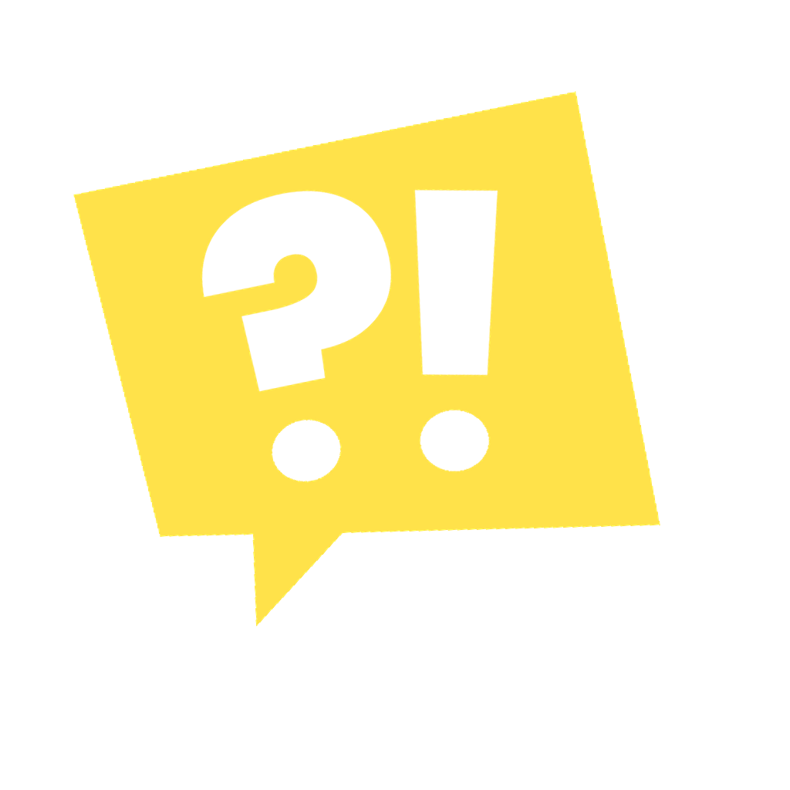
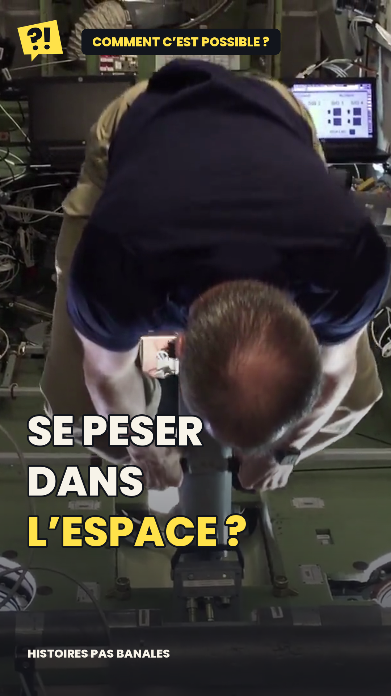
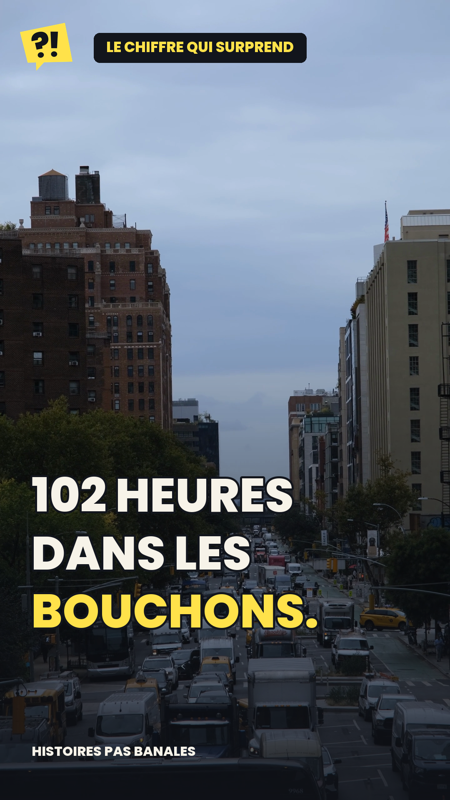

IDENTITÉ VISUELLE
Le réel a de quoi surprendre.

Montrer le plus étonnant dès la première image. Laisser l’action se lire. Expliquer ensuite avec des plans qui démontrent ce que raconte la voix.

Une bulle qui raconte. Des angles francs. Une ponctuation forte.
Portrait plein écran. Plans variés. Mots forts. Une signature courte.
« Pas banal, hein ? »


Identité préparée pour le projet. Aucun changement de compte TikTok effectué.